🥇 Jula Bluewear Cobra — 19,90 kr (EN166, 4,7★/139, odbiór 2 h) — najmocniejszy stosunek cena/„działa". Vision: 6/10 (wygląda BHP).
🥈 Amazon Honeywell A700 — 40,95 kr (transparent lens, I lager) — nowy rekord wysyłkowy (przebił 3M VIRTUA 44 kr).
🥉 Amazon uvex x-fit 9199 — 76 kr (anti-fog, 4,4★) — najwyższa ocena wygody wśród tanich (vision 8/10).
💎 Sportowy kompromis: Jula Atrax — 99,90 kr (klar lins, regulowane zauszniki i kąt, rep+imskydd) — vision: sportowy krój.
⚠️ Korekty po weryfikacji: “Merida 50 kr z Blocket” ma przyciemnianą linsę (vision) → wykreślona. Aukcja uvex Skyper wygasła + linsa tonowana → wykreślona.
Ceny zweryfikowane 05.10.2026. Wszystkie pozycje z przezroczystą szybką. Kolumna “vision” = ocena wygody/typu konstrukcji ze zdjęcia (1-10, model vision).
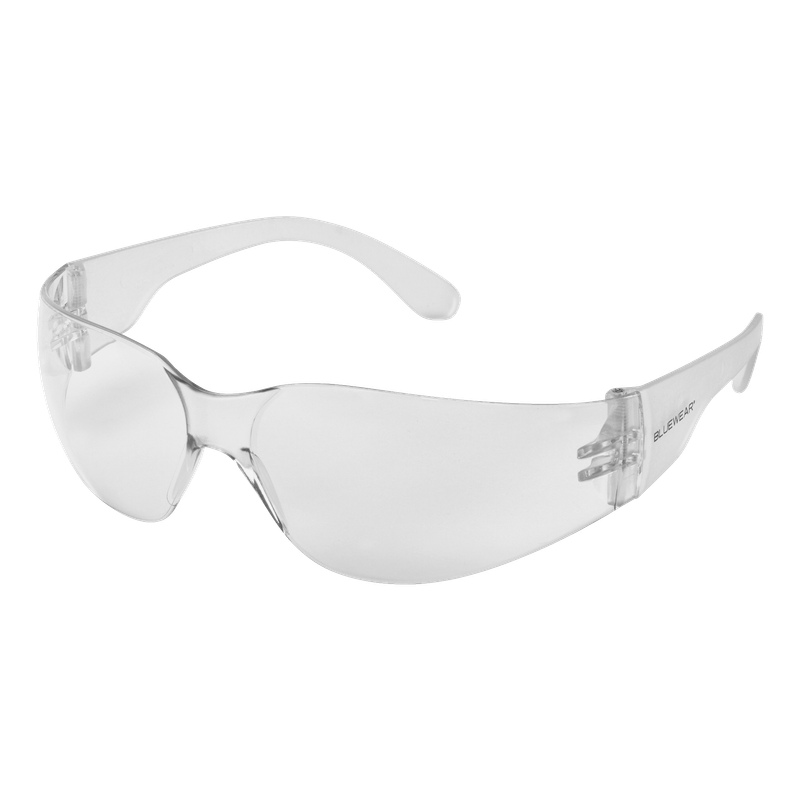
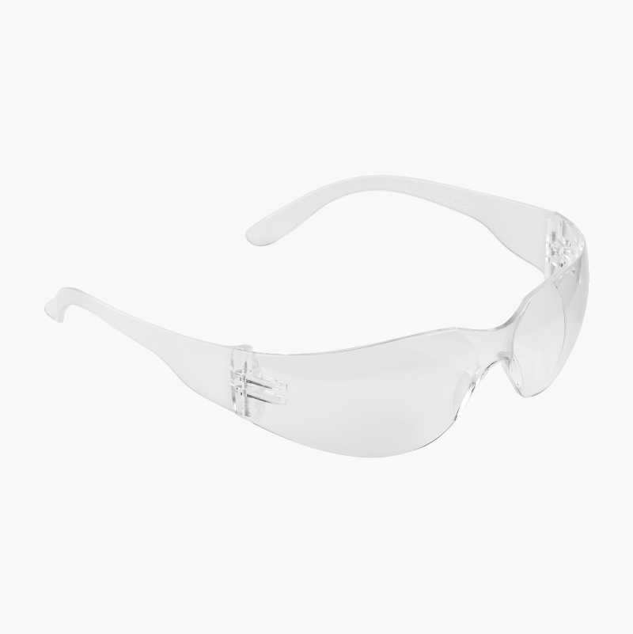
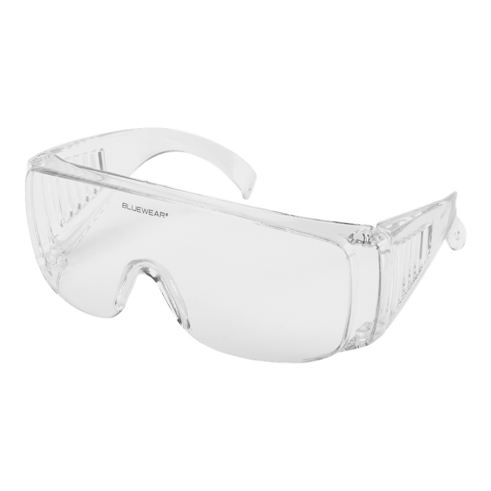
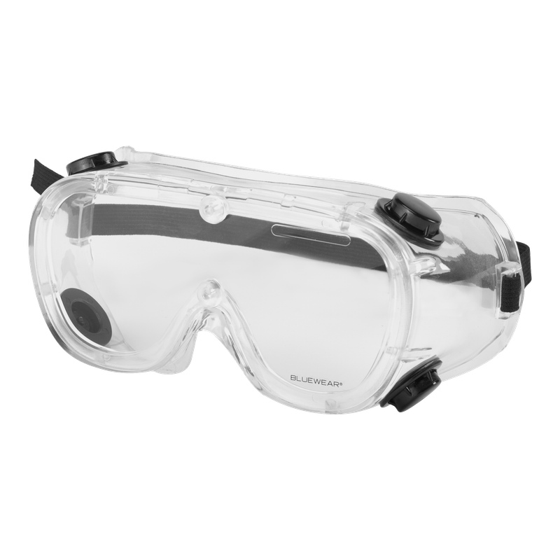
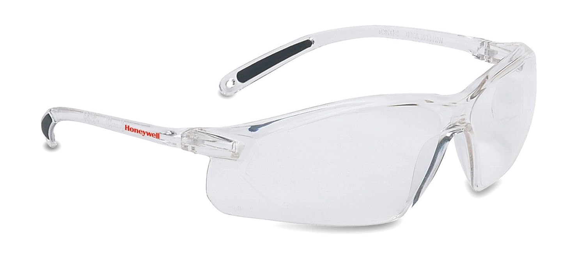
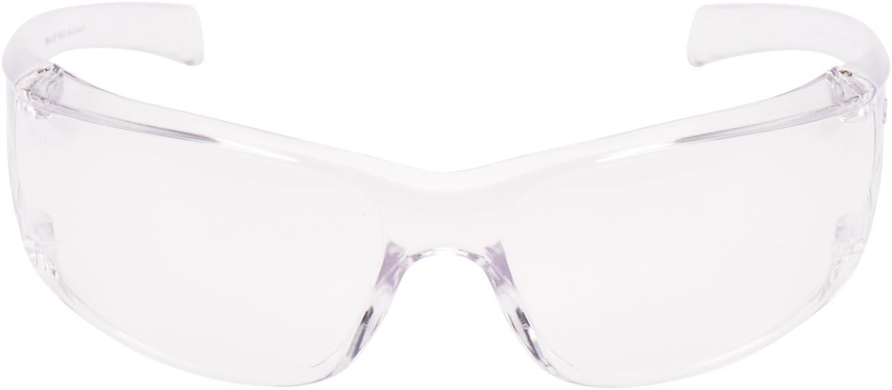
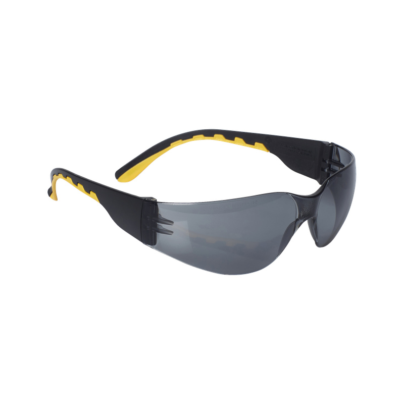
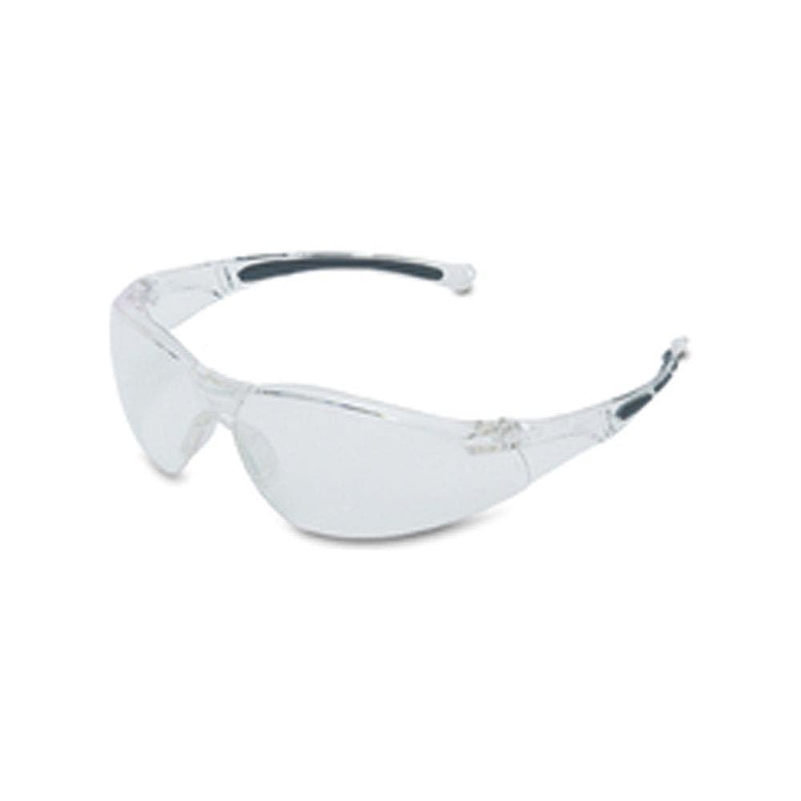
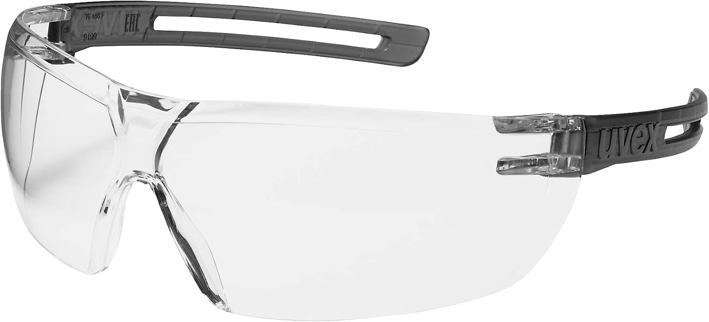
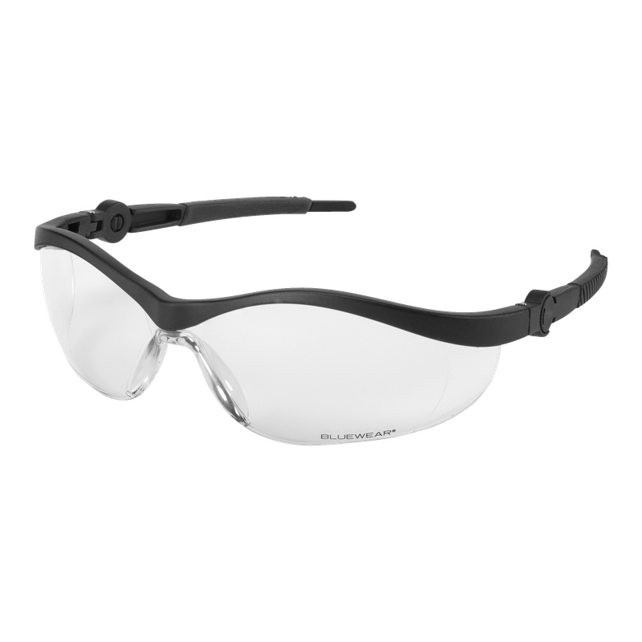
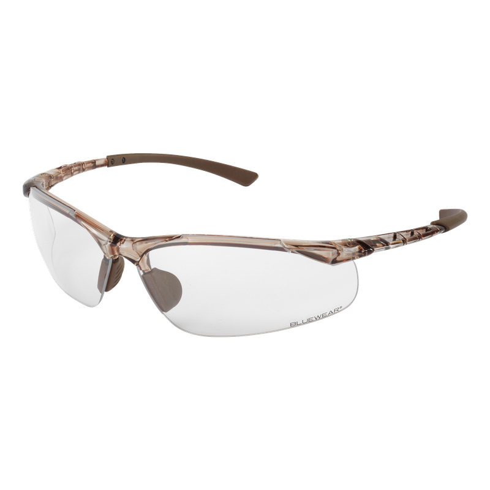
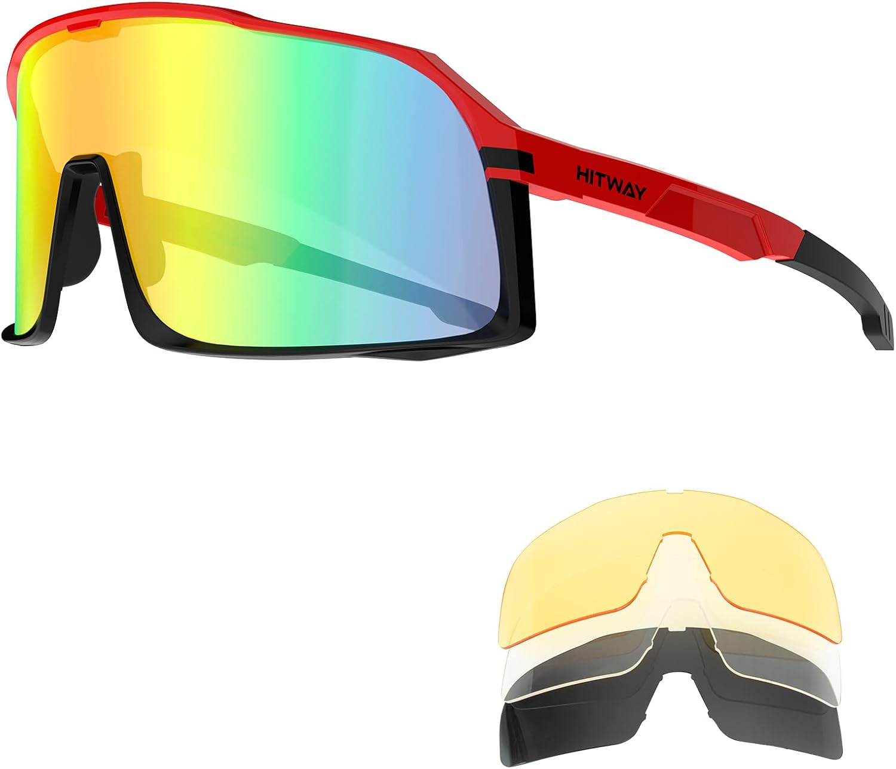
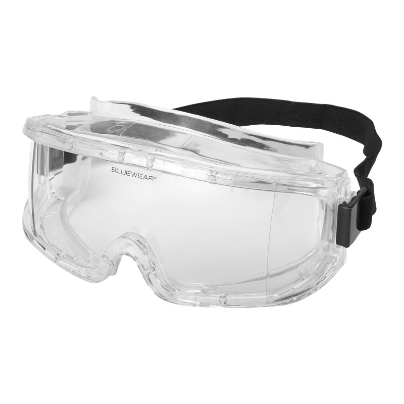
Blocket + Tradera: 8 fraz każda; FB Marketplace: 2 frazy (limit). Zdjęcia zweryfikowane vision — 3 pozycje wykreślono (linsa tonowana).
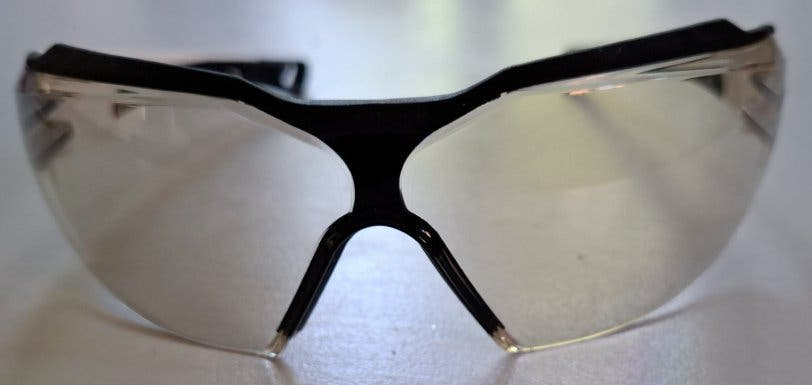
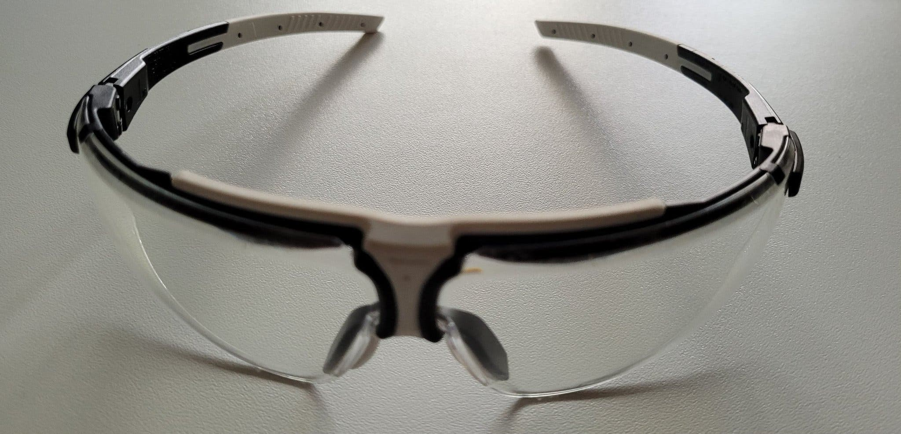
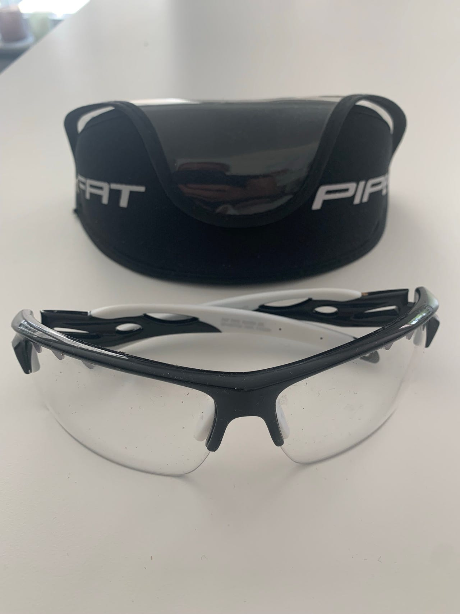
| Produkt | Typ | Wygoda | Kto powinien brać |
|---|---|---|---|
| uvex x-fit 9199 (76 kr) | półrama sportowa | 8/10 | chce sportowo + anti-fog |
| HITWAY set (131 kr) | full-frame sportowe | 9/10 | chce komplet na cały rok (4 linse) |
| Tradera 39 kr „klar" | półrama + gumowy nosek | 8/10 | tani strzał, wymaga odbioru/wysyłki |
| Honeywell A800 (62 kr) | okulary sportowo-BHP | 7/10 | chce markę tanio |
| Jula Cobra (19,90 kr) | båglös BHP | 6/10 | minimum kosztu |
| Biltema / 3M VIRTUA (25/44 kr) | BHP bez gumek | 5/10 | budżet absolutny |
| Jula Boa / Mangrove (40/149 kr) | gogle z opaską (klar) | — | deszcz/zimno/kapoki, mniej przewiewne |
| Źródło | Wynik | Powód |
|---|---|---|
| Blocket: Merida 50 kr (Väsby) | wykreślone | Vision: linsa TONOWANA — nie clear (dobrze, że sprawdziliśmy przed kontaktem) |
| Tradera: uvex Skyper (69 kr) | wykreślone | Aukcja wygasła (kończyła się 01.10) + linsa tonowana na zdjęciu |
| Stadium.se | FAIL | Vercel checkpoint (bot wall) |
| AddNature.se / Endorse.se | FAIL | 404 na /search, SPA shell — brak danych |
| Cykelshoppen.se | FAIL | HTTP 522 (Cloudflare down/pusty) |
| XXL / Sportson | brak clear tanio | XXL tylko Mechanix clear 279 kr (drogo); Sportson search nie renderuje |
| Intersport / Cykloteket | za drogo | Wszystko 280-349 kr+ |
| Granit | brak | Sklep nie istnieje / brak oferty online |
| TopHomer (Amazon 83 kr) | pominięte | Brand chiński — zgodnie z wymogiem „nie z Chin" |
| Photochromic (SCVCN/Kapvoe/ROCKBROS) | nie spełnia | Przyciemniają się w słońcu |
| AliExpress | wykluczone | Per wymóg „nie z Chin" |
Zakres: 30.09 – 05.10.2026. Kanały: skrypty własne (Blocket SSR, Tradera RSC, FB GraphQL, AliExpress SSR) · curl+parser (Amazon.se: 6 fraz, 190+ listingów, PDP-weryfikacja) · Chrome na Pi (Jula, Biltema — search client-side) · Lightpanda CDP dla JS-opornych sklepów (Kjell, Intersport dehydraded JSON, Cykloteket GA-data) · 2 rundy subagentów (sklepy + marketplace; 8 fraz/platformę). Vision-pass: model VL na 15 zdjęciach — weryfikacja „klar vs tonowana" + ocena konstrukcji/wygody (1-10). Frazy: cykelglasögon, sportglasögon, skyddsglasögon, löparglasögon, goggles, klar/transparent, cykling, uvex (SE + PL).
Raport wygenerowany przez Andrzeja (OpenClaw). Poprzednia wersja: 2026-10-01.